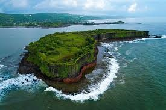
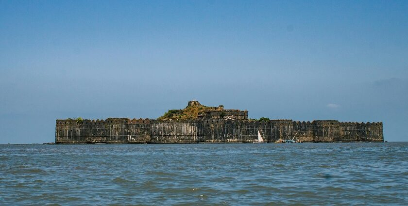
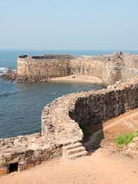
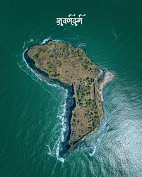

दुर्गाचे प्रवेशद्वार पूर्व दिशेला असून उत्तराभिमुख आहे. हे प्रशस्त प्रवेशद्वार छत्रपती शिवाजी महाराजांनी बांधून घेतले आहे. महाद्वाराजवळ पोहोचताच पायरीवर कासवाची प्रतिमा कोरलेली आहे. उजव्या बाजूला तटबंदीवर हनुमानाची मूर्ती कोरलेली आहे. ही मूर्ती अर्वाचीन असावी. प्रवेशद्वारातून आत शिरताच पहारेकऱ्यांच्या दोन देवड्या दिसतात. या देवड्यांच्या दोन्ही बाजूने तटबंदीवर जाण्यासाठी दगडी पायऱ्या आहेत. डाव्या हाताने पुढे गेल्यावर बांधीव विहीर आणि पुढे राजवाड्याचे दगडी चौथरे आहेत. किल्ल्यात दक्षिणेकडे भक्कम बांधणीचे एक कोठार आहे. सुवर्णदुर्गाच्या भक्कम तटबंदीवरून शेवाळ्याने हिरवे पडलेले पाणी असलेल्या विहिरी आणि पडझड झालेले वाड्याचे अवशेष दिसतात. दुर्गाच्या पश्चिम तटाकडे एक चोरदरवाजा आजही सुस्थितीत असलेला दिसतो. गडावर सात विहिरी आहेत, पण कुठेही मंदिर नाही. प्रसिद्ध दर्यासारंग कान्होजी आंग्रे यांची कुलदेवता कालंबिका देवी हिचे इथले देऊळ कान्होजीने केव्हातरी सुवर्णदुर्गावरून हलवून देवीची स्थापना अलिबागच्या हिराकोटामध्ये केली होती असे मानले जाते. इ.स. १६६० मध्ये शिवाजी महाराजांनी हा किल्ला आदिलशाहीकडून जिंकून घेतला आणि किल्ल्याच्या डागडुजीसाठी आणि पुनर्रचनेसाठी दहा हजार दोन रुपये खर्च केले असा ऐतिहासिक कागदपत्रांत उल्लेख आहे.
